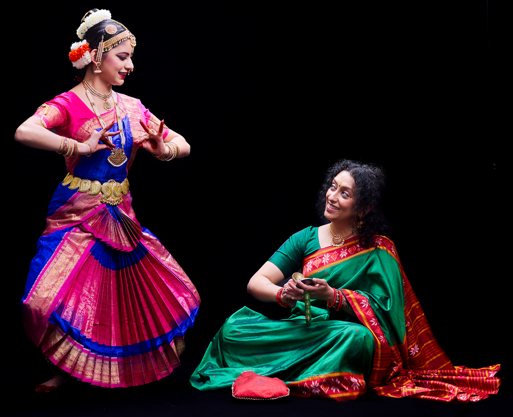
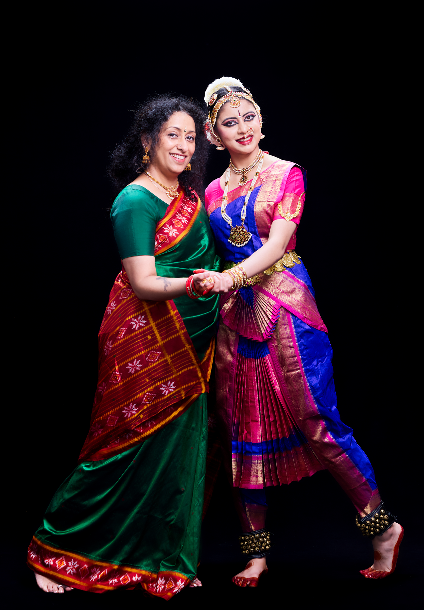
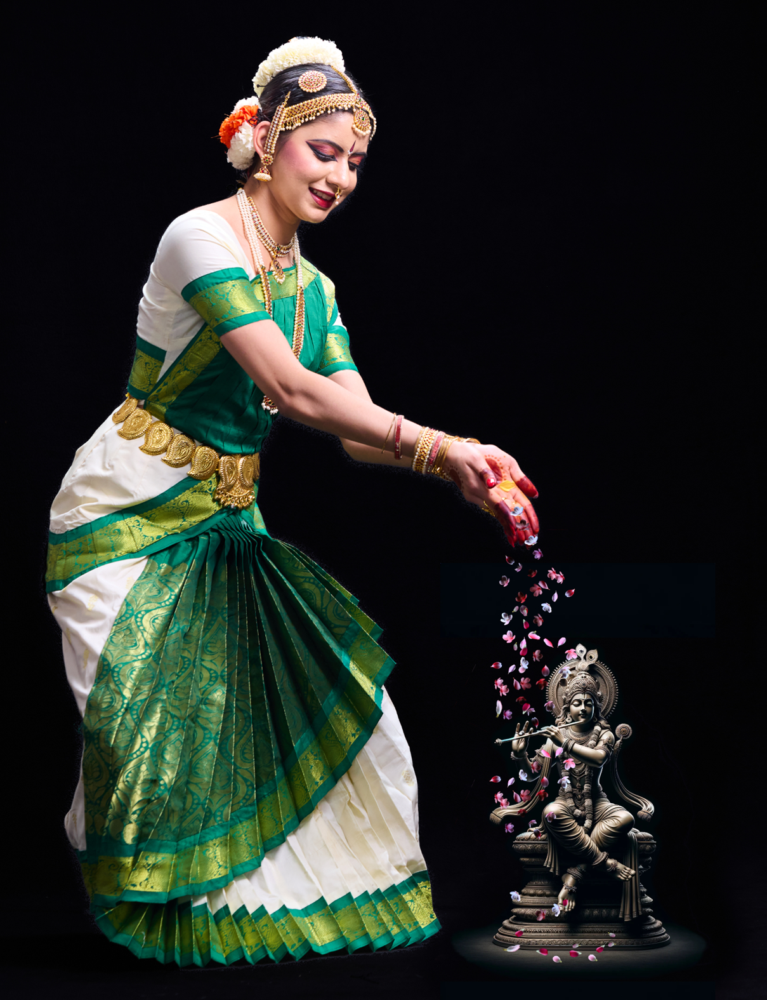
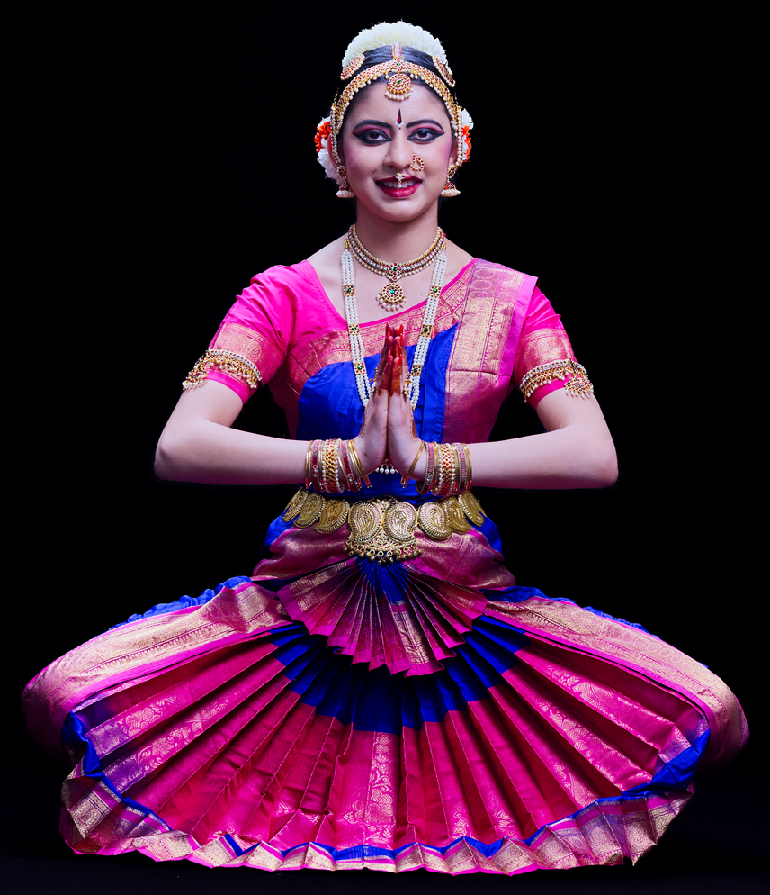

Bharatnatyam Arangetram Ananshi Patel

☰ Guru Sarita Venkatraman

Dr. Sarita Venkatraman is a native of Mumbai, India and is a passionate teacher and practitioner of Bharatanatyam. She has trained in Kathak and Bharatanatyam in India. Her passion for the art form brought her to Smt. Revathi Satyu with Arathi School of Dance, when she was a graduate student at UTDallas. While working on her Doctoral degree in Space Sciences, she re-started her dance journey and performed her Arangetram in 2003. Since that time, Sarita has honed her craft under many able gurus including Smt. Kalanidhi Narayan, Smt. Priyadarshini Govind, Smt. Nirupama Rajendra, Smt. Padmini Ravi, Smt. Rama Vaidyanathan, Shri. Vaibhav Arekar to name a few. She is the co-founder of Indique dance company which has won many laurels for its work and performed in several prestigious venues all across the USA. She is the artistic co-director of Mudras in Motion. Mudras in Motion is a new movement that aims at using Arts as therapy for the underserved communities. Sarita is on the executive board for the World Dance Alliance Americas (WDAA). She is also an active member of the Dance Council of North Texas, and the Business Council for the Arts. Sarita has been teaching at Arathi School of Dance for 17 years. Her passion is to teach and share the love for the art form with the next generation of dancers. She has conducted several Arangetrams and hopes that kids will inspire kids to continue this art form for years to come. Sarita teaches in Plano and Frisco. She lives in Plano with her husband Abhijeet Chachad and two sons, Tanav and Eshaan and their pet Allie.
☰ Shishya Ananshi Patel

Ananshi Patel has been learning Bharatanatyam for 12 years under the guidance of Guru Dr. Sarita Venkatraman at the Arathi School of Dance. From annual recitals since the age of six to dance productions like RangAradhana, Bharatanatyam has always been a defining aspect of Ananshi's life. Dance has shaped Ananshi's character by building her resilience, enabling creative expression, and providing an outlet for Ananshi to connect with the divine. As an incoming freshman at UT Austin pursuing a degree in business, Ananshi is eager to continue this art form in college and beyond. Arangetram literally translates to "ascending the stage", symbolizing the beginning of a dancer's journey in Bharatanatyam. For Ananshi, this milestone is not simply a rite of passage but rather a culmination of years of dedication, passion, and hard work. Ananshi is incredibly humbled and grateful to have friends and family witnessing the start of this beautiful journey today.
☰ Program
1. Mallari
Raagam: Gambheera Nattai
Taalam: Adi
A Mallari is an invocatory piece performed in temple festivals when the deity is taken in a procession. This Mallari depicts a devotee waiting to welcome the procession, clinking her bells and dancing to the instruments with joy and devotion.
2. Alarippu
Raagam: Suruti
Taalam: Mishram
An Alarippu is a nritta (rhythmic) piece similar to a flower blossoming as the dancer's eye, neck, and limb movements open up. This Alarippu, containing verses from Krishnashtakam, is dedicated to Lord Krishna.
3. Jatiswaram
Raagam: Kalyani
Taalam: Rupakam
The Jathiswaram is a pure nritta dance combining jathis (rhythmic dance patterns) with swaras (musical notes) in adavu structures.
4. Ganaraj Rangi
Raagam: Miya Malhar
Taalam: Ekam
Ganaraj Rangi is a devotional hymn in praise of Lord Ganesha, often sung in temples during the festivities of Ganesh Chaturthi.
5. Varnam
Raagam: Behag
Taalam: Adi
The varnam is the centerpiece of a margam, highlighting the dancer's stamina and skillful ability to balance intricate jathi sections with passionate storytelling pieces. This particular varnam follows a young nayika and her love for Lord Krishna.
6. Durga Devi
Raagam: Navarasakannada
Taalam: Adi
Durga Devi is a padam, or descriptive piece of music, in honor of Durga, a fierce Hindu goddess revered for her strength (shakti) and fearless, menacing nature.
7. Payoji Maine
Raagam: Mishra Pahadi
Taalam: Ekam
Payoji Maine is a bhajan (devotional song) in praise of Lord Ram, comparing him to a precious gem.
8. Thillana
Raagam: Sindubhairavi
Taalam: Adi
The thillana is a fast-paced rhythmic dance performed at the end of a margam. This particular thillana depicts the ten Avatars of Lord Vishnu, known as Dashaavataram.
9. Mangalam
Concluding the margam, this mangalam expresses gratitude to God, the guru, orchestra, stage, and audience.
| Vocal: | Shri Shriram Rajamani |
| Nattuvangam: | Guru Dr. Sarita Venkatraman |
| Mridangam: | Shri Sreenivas Ponnappan |
| Violin: | Smt. Sita Jayanth |
| Flute: | Shri Sundar Rajan Padmanabhan |
